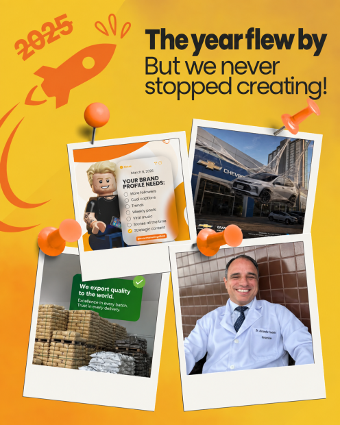
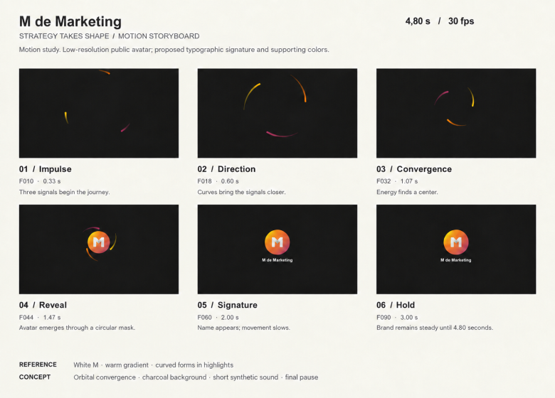
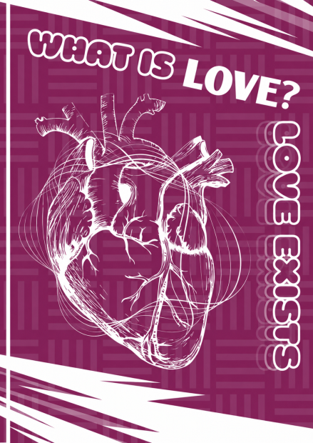
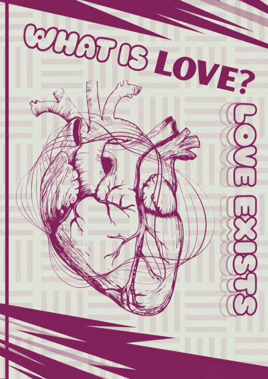
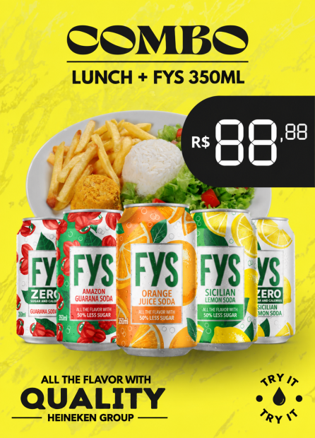
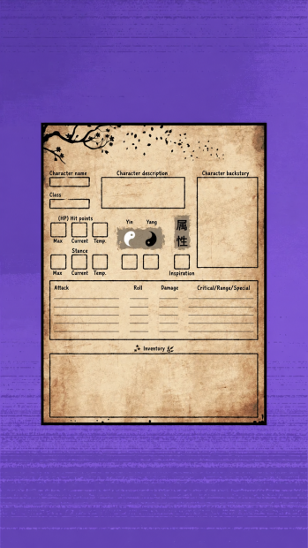

01 — Identity / Packaging
NÓA
Brazilian botanical drinks
A visual system balancing natural appeal, personality and recognition across every flavor.
View projectAVAILABLE FOR PROJECTS
Visual identities, digital experiences and editorial design
for brands that want to stand apart.

01 / SELECTED WORK
A selection of identities, interfaces and visual experiences developed between 2024 and 2026.
01 — Identity / Packaging
Brazilian botanical drinks
A visual system balancing natural appeal, personality and recognition across every flavor.
View project02 — UI/UX / Product design
An app concept for requesting and tracking healthcare authorizations with clarity at every step.
View project03 — Identity / Editorial
A visual identity for a neighborhood focacceria, with a warm, playful voice that brings people together over handmade food.
View project





04 — Campaigns / Graphic design
Campaigns, posters and digital pieces created for different visual styles and brand contexts.
View selection02 / ABOUT
I’m Harley Aguilar, a Brazilian visual designer. I turn concepts into clear, consistent visual languages built to scale.
My practice brings together visual identity, editorial design, campaigns and digital experiences.
EXPERIENCE
4+years creating visual projects
BASED IN
FORTALEZACeará, Brazil / working remotely
LANGUAGES
PT / ENcommunication in Portuguese and English
03 / HOW I CAN HELP
01
Strategy, visual identity and brand applications.
02
Interfaces, landing pages and intuitive digital experiences.
03
Campaigns, social media, editorial design and art direction.
Process: discovery → direction → system → application
04 / CONTACT

SOCIAL MEDIA / VIDEO EDITING
Content with purpose.
Editing with presence.
Video editing, visual storytelling and content adapted for social platforms. Selected work from my own project, with public results and examples of what I can bring to a creative team.
Explore my social media work ↗EDIT.
CONNECT.HUDEPLAY / HUDE_RPG▶
Public metrics · October 6, 2026 · Shorts sample: the 12 most recent videos on YouTube. Rounded counts.